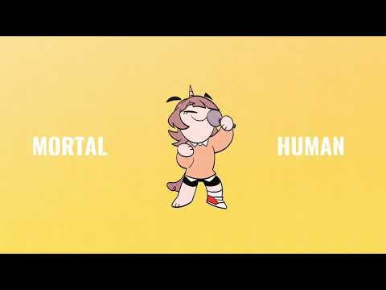
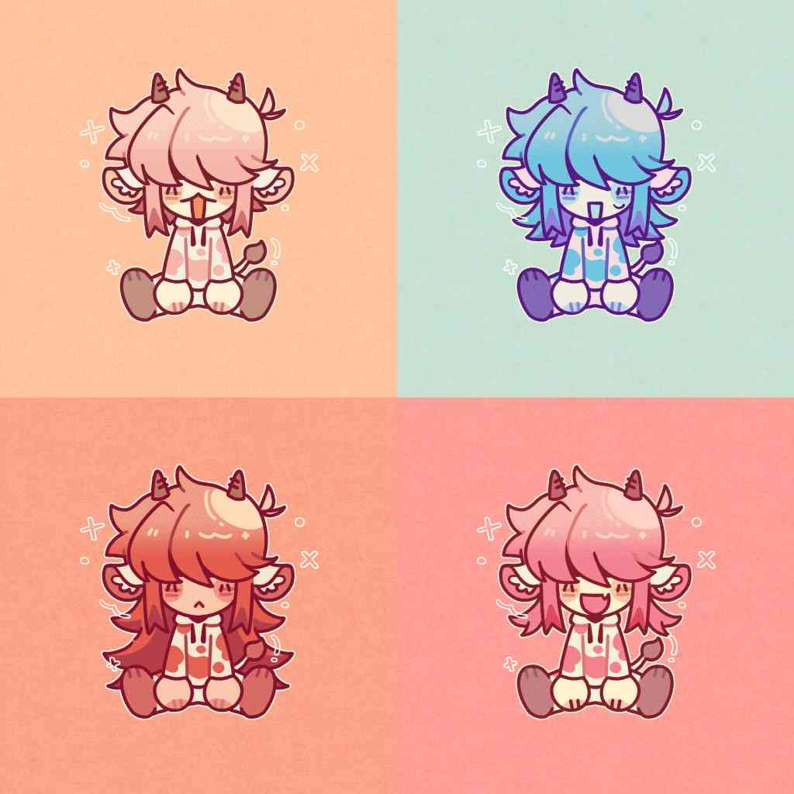
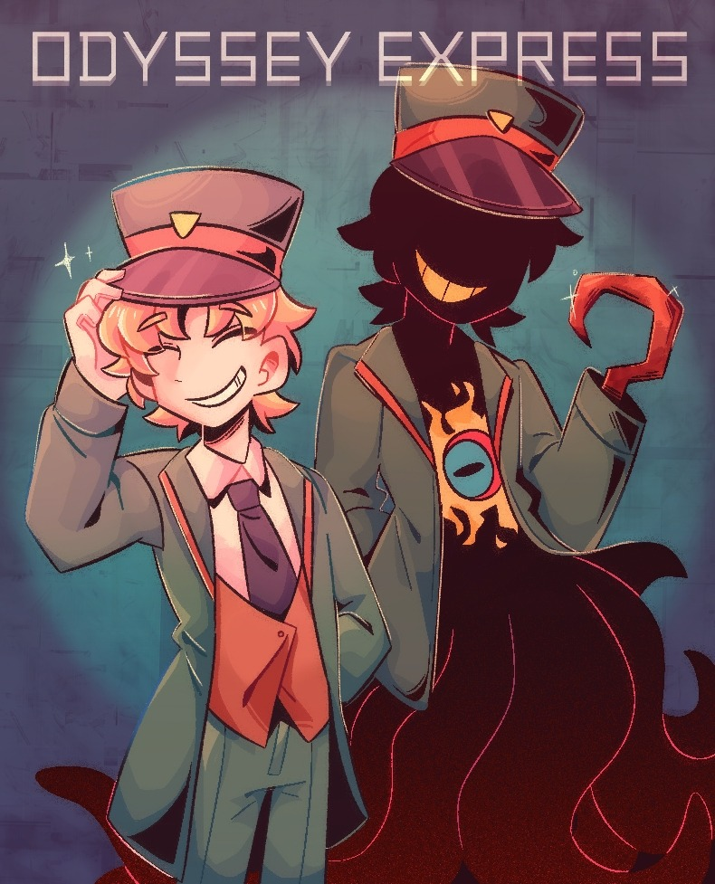

01 / ANIMATION
2D 電腦動畫
學習 2D 動畫製作、角色動態、 畫面節奏與視覺敘事。
你好，我是 Junmi。
一位熱愛 2D 動畫、動態影像與視覺敘事的學生。
我是多媒體動畫系的學生，主要學習 2D 電腦動畫 及 After Effects 動畫，對動畫製作抱有極大的熱情。
我希望透過不斷創作與學習，探索不同的視覺風格， 並走訪各地汲取靈感，將觀察到的事物轉化為 具有個人特色的作品。
對我而言，動畫不只是畫面移動， 更是將想像、情緒與故事轉化成視覺語言的方式。
以畫面傳遞情緒，以動態訴說故事。 持續累積作品，探索動畫與視覺敘事的更多可能。
學習 2D 動畫製作、角色動態、 畫面節奏與視覺敘事。
自學 AE 動畫，練習關鍵影格、 動態設計、循環動畫與視覺特效。
透過數位繪圖進行插畫創作、 角色設計與視覺風格探索。
每一份作品，都是一次新的嘗試與探索。



> VISUAL EXPERIMENT探索不同的構圖、色彩與視覺表現方式。
Experiment Visual Art主動學習 AE 動畫製作， 練習關鍵影格、動態效果與循環動畫。
透過課堂作業與個人練習累積作品， 持續嘗試不同的動畫與視覺風格。
持續精進動畫技巧，從日常生活、 不同文化與旅行經驗中汲取創作靈感。